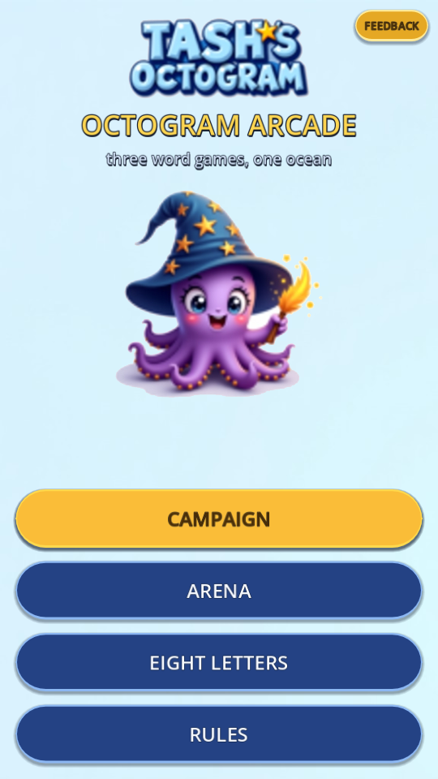
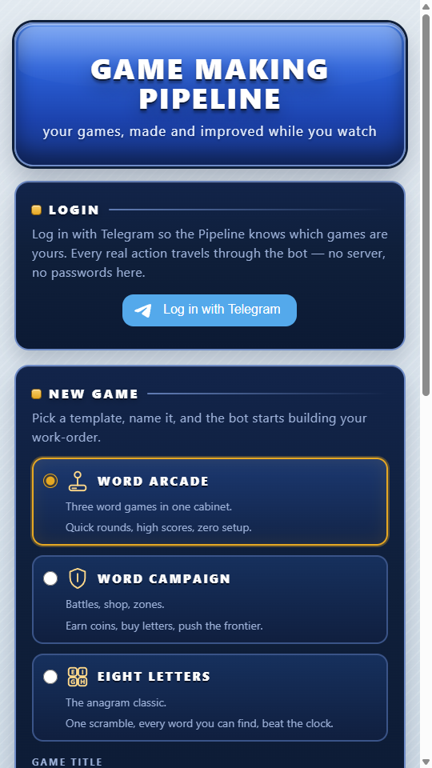
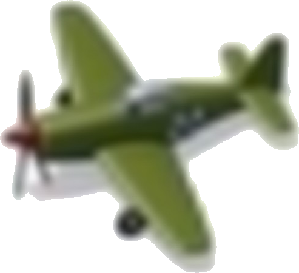
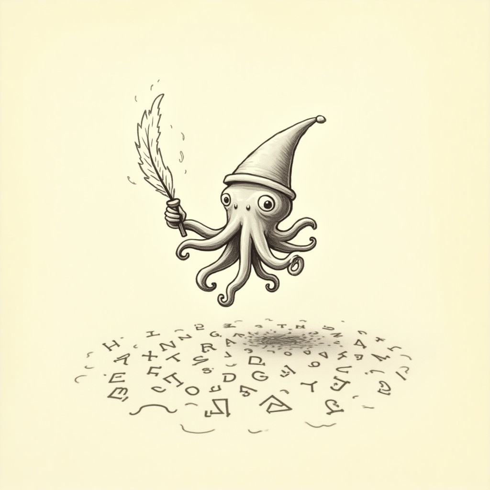
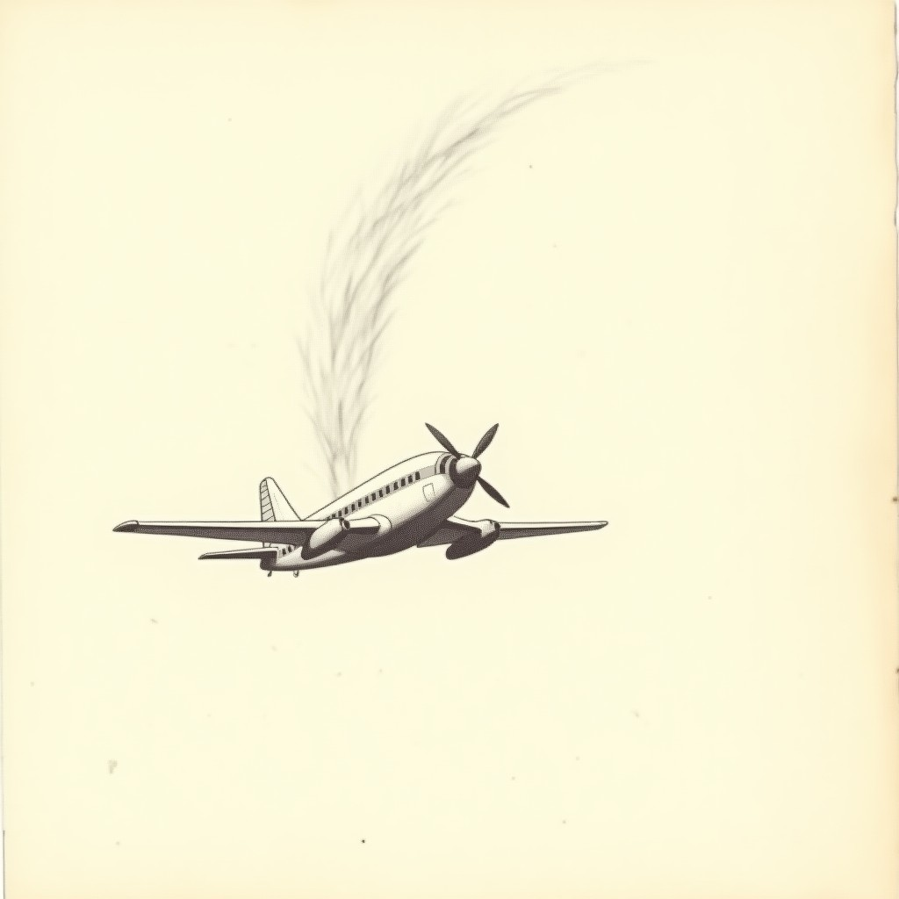
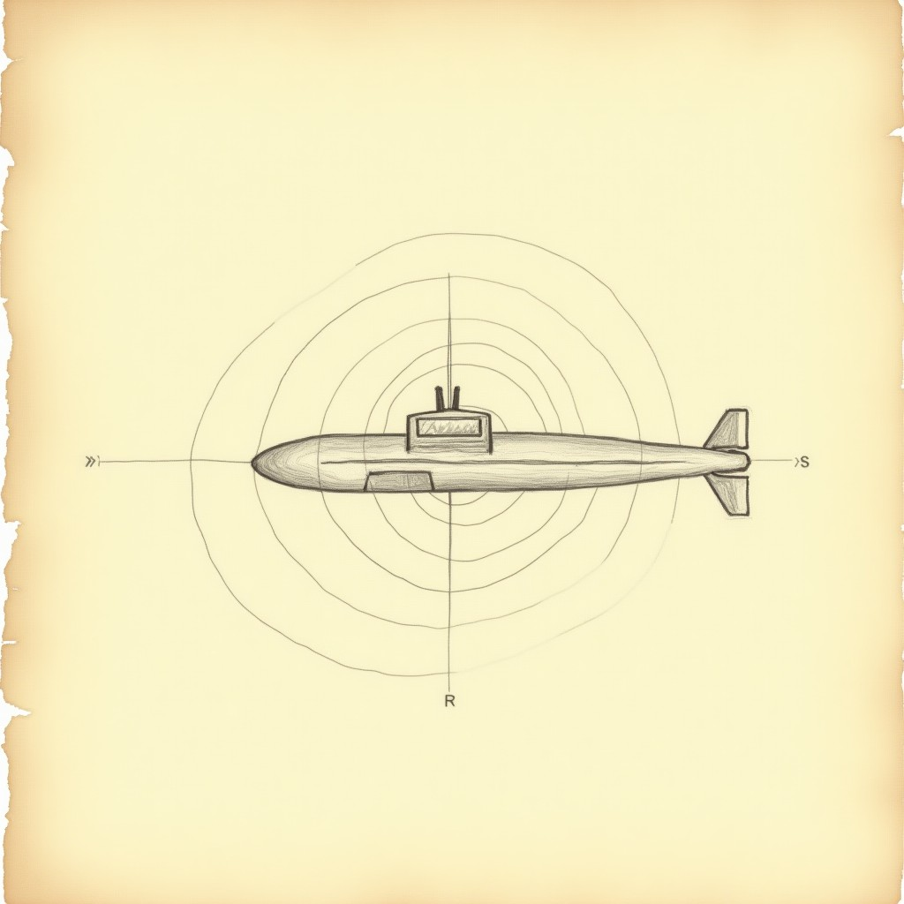
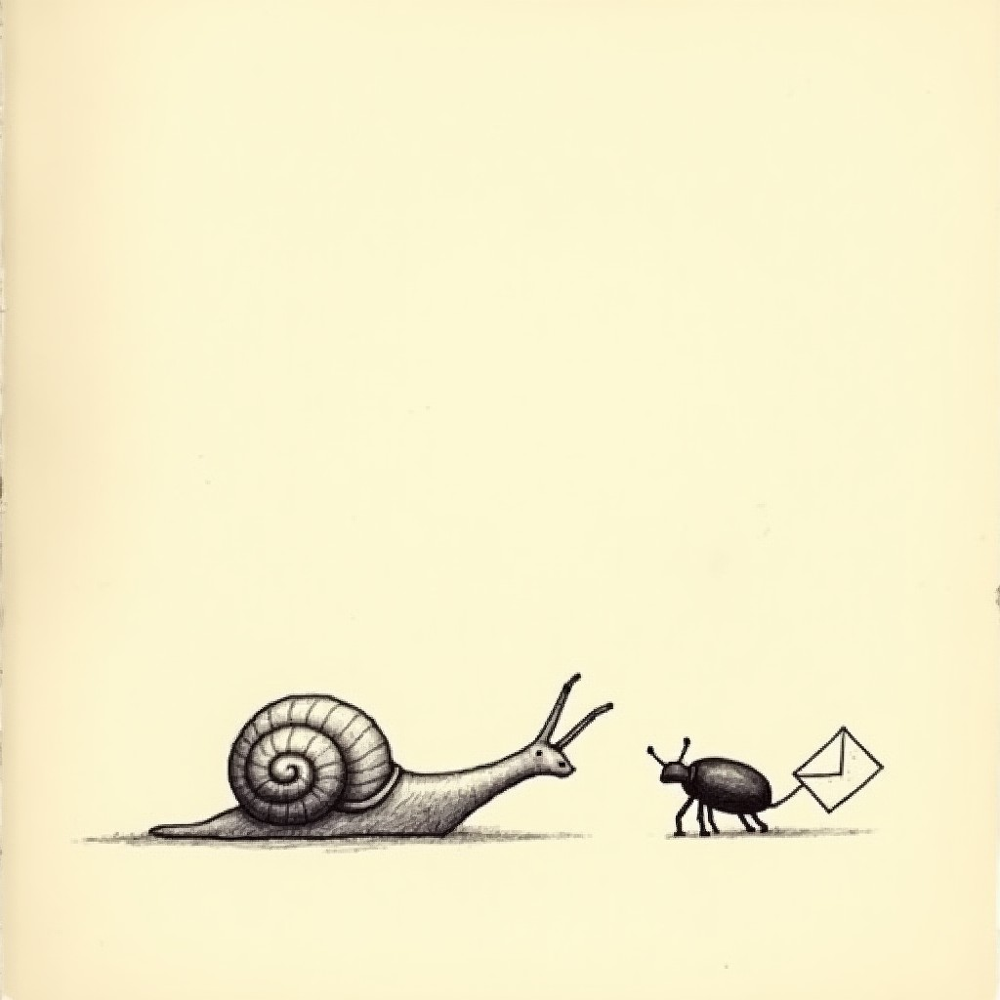

THE ADVENTURE
The adventure log of a factory that makes games. Updated by machines and humans as things happen.
Format law: entries are appended, never rewritten. Each entry: `## — `, a short honest paragraph (what happened, what broke, what was learned), optional image. Screenshots live in `images/`. Nothing ships past a red wall — the diary records failures too.</p>
<p class='li'>---</p>
<p>Aaron asked for a word game for Tash. By evening there were three: a Word Poker recreation (her own, branded TASH'S OCTOGRAM), a magical word RPG where words are spells, and Eight Letters — the East of the Web classic reborn. All on the internet, all from one engine family, 846 automated checks green. Tash's game has a QUICK START in its tutorial because she likes to *play*, not read.</p>
<p></p>
<p>The 148,000-word dictionary kept accepting words like AAHED. We built SCOWL tiers — COMMON (26,955 everyday words) / STANDARD / EXPERT — unioned across five regional variants so THEATERS and THEATRES are both legal, like the original EotW players begged for in 2005. A three-state cycler in every rules panel. COMMON by default, kindness by default.</p>
<p>Ten procedural retro SFX per game, SOUND toggles, BACK buttons on every screen that had trapped you. Twice tonight the worker-haiku lane hit its 5-hour usage cap mid-agent — and both times the agent had *finished the work before dying*. Doctrine learned: verify the disk before relaunching anything.</p>
<p>The three games became one (OCTOGRAM ARCADE) and got a front door: a hub with **Login with Telegram**, a NEW GAME picker, MY GAMES. The bot went live both ways — Aaron's phone got the first message. The whole system got its name: **the Game Making Pipeline**. Feedback in, deployed games out, no servers, no budget.</p>
<p></p>
<p>First CI run: the official godot image doesn't exist. Second run: no fontconfig, and — the real find — the game repo held web files, not source. Restructured (main = source, deploy = export, Pages on deploy). Third run: a *duplicate class file* Rog's stale cache had been hiding; the clean container ratted it out. Fourth run: **7 suites, 671 checks, green on GitHub's own runners.** The cloud doesn't forgive cached lies. That's exactly why it's the judge.</p>
<p>glm-5.3 (slow, thorough) became the BOSS: triage, plan, review — it owns the last word. openrouter/free became the WORKERS: fast drafters. Your directive: *the boss coordinates and reviews; the workers build.* The all-cloud conversion landed the same hour: deploys push only to the deploy branch, runtime state commits back to the repo — git is the database, and the Pipeline now runs with every machine in the house switched off.</p>
<p>A `/newgame` order used to die in a folder. Now: poll spots it → the factory workflow instantiates from template → **the full gate wall** → publishes to the hub at `games/<player>-<slug>/` → Telegram messages the player their live link. Making the game AND testing it, one chain.</p>
<p>**STAR VISITOR** (a systems study of Alien Hominid — original assets only): slice A green, 77+77 checks twice, the 3-bullet cap proven, the one-hit economy working.</p>
<img src="global_day2_star_visitor_hero.png" alt="Star Visitor hero" loading="lazy">
<p>**GYRO SQUADRON '45** (Strikers 1945-inspired, steered by phone tilt): the control prototype — the riskiest part — landed as *tested math*: gravity-truth tilt, calibration, dead zone, quadratic curve, clamps. 17+17 twice, plus a 6-second full-tilt sway soak that never left bounds.</p>
<p></p>
<p>Both are being built milestone by milestone, each landing with its own battery, nothing "done" until green twice in a row.</p>
<p>Every project keeps its own phase-by-phase diary in its repo (entries append at every green wall):</p>
<p class='li'>- [Octogram Arcade](https://github.com/slothitude/octogram-arcade/blob/main/DIARY.md)</p>
<p class='li'>- [STAR VISITOR](https://github.com/slothitude/star-visitor/blob/main/DIARY.md)</p>
<p class='li'>- [GYRO SQUADRON '45](https://github.com/slothitude/gyro-squadron-45/blob/main/DIARY.md)</p>
<p class='li'>- [SONAR](https://github.com/slothitude/sonar/blob/main/DIARY.md) *(TFS jam)*</p>
<p class='li'>- [SLIME LINE](https://github.com/slothitude/slime-line/blob/main/DIARY.md) *(Humboldt jam)*</p>
<p class='li'>---</p>
<p>The Pipeline started keeping this journal — entries append as games are born, deployed, and improved. Failures get recorded too.</p>
<p class='li'>---</p>
<p>Milestone 2 landed green on the double — four weapon tiers, the charge Super, bombs, two enemy brains, the fortress boss in two phases, a 55-second stage with escalating waves and a clear tally. The tilt core from M1 carried it all; every number lives in feel.gd.</p>
<img src="global_day2_gyro_boss.png" alt="Gyro Squadron: Act 1 flies" loading="lazy">
<p class='li'>---</p>
<p>TFS Jam, theme 'It Came From Below': a submarine in black water that sees only by pinging. Six original sprites generated, the vision-core agent is building the ping-reveal mechanic. Deadline: Sept 24, 6PM EST.</p>
<p class='li'>---</p>
<p>Milestone 1 green on the double — the vision core works: cooldown-gated pings, a ring sweeping outward revealing wrecks as echoes that fade over 3.7 seconds, everything else darkness. The battery even caught the agent's own blind spot (a method that didn't exist) and closed it. M2 — the creatures from below — is building.</p>
<p class='li'>---</p>
<p>Slice B green on the double — the signature systems live: mount an agent and flail it around, bite to scare its friends, flip-and-throw it as a weapon; burrow under the field, drag enemies down, mind the four-second suffocation clock; style points for flair, every 5000 buys a life. Its own battery caught two bugs mid-build. Slice C (the mini-boss) queues behind the christening.</p>
<p class='li'>---</p>
<p>Each project now keeps its own diary (per-phase, gate-linked), its own LORE.md written in-world, and devlog sketches in the Oddworld tradition — instructions as artifacts: a diver's logbook page, a slug almanac, a redacted incident report, a pilot's letter, a storybook page of the Word Ocean. Sketches generate per milestone via journal/sketch.py.</p>
<p><em>Next entries write themselves: slice B (riding and burrowing), Act 1's fortress boss, the first player-made game from the hub, the christening — the first feedback-to-deploy lap with a human watching a phone.</em></p>
</section>
<section class="proj" id="0"><h2>OCTOGRAM ARCADE</h2>
<p><em>Phase-by-phase log. Entries append, never rewrite. Nothing is done until its wall is green twice.</em></p>
<p class='li'>---</p>
<h3>2026-09-22 13:19 — The merge</h3>
<p>Three games — Word Poker arena, the RPG campaign, Eight Letters — became one Arcade behind a single menu, 863 checks green, live on Pages with an in-game feedback channel straight to the Pipeline.</p>
<img src="0_logo_plate.png" alt="The merge" loading="lazy">
<h3>2026-09-22 13:32 — Lore recovered</h3>
<p>A found document from the world (see LORE.md) and its sketch now live in this repo's diary_images. Oddworld law: the game's instructions are artifacts of its own world.</p>
<p></p>
</section>
<section class="proj" id="lore0"><h2 class='lore'>THE LORE</h2>
<p>The Octogram guards the Word Ocean, where every word anyone ever said still swims. The Lexicon Leech drinks the deep ones — the long words, the ones that take a whole breath to say. That's why you were sent: a spell-caster with a pocket of letters and ninety seconds at a time. The arena keeps score six ways because the Ocean remembers six ways. And the Eight Letters game? Sailors swear that if you unscramble the eighth letter word, the Leech has to give one word back. Sailors swear a lot of things. But this one keeps proving true.</p>
</section>
<section class="proj" id="1"><h2>STAR VISITOR</h2>
<p><em>Phase-by-phase log. Entries append, never rewrite. Nothing is done until its wall is green twice.</em></p>
<p class='li'>---</p>
<h3>2026-09-22 13:19 — Slice A — the run-and-gun core</h3>
<p>Controller with grounded/airborne aim states, the infinite pistol with its hard 3-on-screen bullet cap, charge shots, agent enemies with their advance-stop-shoot brains, wave 1, one-hit lives with iframes. 77+77 green on the double.</p>
<img src="1_hero_idle.png" alt="Slice A — the run-and-gun core" loading="lazy">
<h3>2026-09-22 13:19 — Slice B — the signature systems</h3>
<p>Enemy riding (mount, flail, bite-scare, flip-and-throw), burrowing (drag-downs, the 4-second suffocation clock, buried extra lives), and the style economy turning flair into lives. 60+60 green; replays banked 1200-1500 style per run.</p>
<img src="1_enemy_agent.png" alt="Slice B — the signature systems" loading="lazy">
<h3>2026-09-22 13:22 — Lore recovered</h3>
<p>A found document from the world (see LORE.md) and its sketch now live in this repo's diary_images. Oddworld law: the game's instructions are artifacts of its own world.</p>
<img src="1_sketch_incident_page.png" alt="Lore recovered" loading="lazy">
</section>
<section class="proj" id="lore1"><h2 class='lore'>THE LORE</h2>
<p><em>Entry continues after redaction:</em></p>
<p>It fell the night of the frost fair. Small, green, polite. The men in hats came within the hour. The visitor has since demonstrated: immunity to small arms (involuntary), proficiency with borrowed weaponry (alarming), and what the field team is calling "riding" (do not ask). Current policy is containment. Current reality is that it ate through containment, borrowed a golf cart, and taught itself the word "diplomatic." We have stopped writing estimates of its intentions. It has started writing ours.</p>
</section>
<section class="proj" id="2"><h2>GYRO SQUADRON '45</h2>
<p><em>Phase-by-phase log. Entries append, never rewrite. Nothing is done until its wall is green twice.</em></p>
<p class='li'>---</p>
<h3>2026-09-22 13:19 — Milestone 1 — tilt as tested math</h3>
<p>The riskiest part first: gravity-truth tilt steering with calibration, dead zone, quadratic curve, bounds clamps, touch fallback — all as an injectable input source CI can drive without a phone. 17+17 plus a full-tilt sway soak.</p>
<img src="2_player_p51.png" alt="Milestone 1 — tilt as tested math" loading="lazy">
<h3>2026-09-22 13:19 — Milestone 2 — the Act 1 arsenal</h3>
<p>Four weapon tiers, kill-charged Super Shot, bombs, fighter and bomber brains, the fortress boss in two phases, a 55-second escalating stage with clear tally. 24+24 green; the eat-everything run dies honestly and retries.</p>
<img src="2_boss_fortress.png" alt="Milestone 2 — the Act 1 arsenal" loading="lazy">
<h3>2026-09-22 13:22 — Lore recovered</h3>
<p>A found document from the world (see LORE.md) and its sketch now live in this repo's diary_images. Oddworld law: the game's instructions are artifacts of its own world.</p>
<p></p>
</section>
<section class="proj" id="lore2"><h2 class='lore'>THE LORE</h2>
<p><em>From a pilot's letter home, returned unopened:</em></p>
<p>You won't read about the squadron in anything they print. We fly the old prop jobs against things the war office calls "weather." The weather has engines, Mother. The weather shoots back. And the lads who fly high enough say that past the black contrails, the sky stops being 1945. I tilt my wings and the plane answers like she knows — that's the whole trick of it out here. Trust the tilt. Doubt the sky.</p>
</section>
<section class="proj" id="3"><h2>SONAR — TFS jam</h2>
<p><em>Phase-by-phase log. Entries append, never rewrite. Nothing is done until its wall is green twice.</em></p>
<p class='li'>---</p>
<h3>2026-09-22 13:19 — Milestone 1 — the ping sees</h3>
<p>The vision core: cooldown-gated sonar, a ring sweeping outward, wrecks revealed as echoes that fade over 3.7 seconds, everything else darkness. The battery caught its own coverage hole and closed it. 17+17 green.</p>
<h3>2026-09-22 13:22 — Lore recovered</h3>
<p>A found document from the world (see LORE.md) and its sketch now live in this repo's diary_images. Oddworld law: the game's instructions are artifacts of its own world.</p>
<p></p>
</section>
<section class="proj" id="lore3"><h2 class='lore'>THE LORE</h2>
<p><em>Recovered from a waterlogged logbook, date unknown:</em></p>
<p>They told us the Vela went down empty. The manifest says grain. But grain doesn't sing, and at forty fathoms you can hear it — something in the wreck keeps a tone, like a throat remembering a note. We go down for the beacons because the company pays. We ping because the dark is honest about nothing else. And when the echo comes back shaped like something with a face, you do not ping again. You surface, you log "no anomalies," and you let the next watch wonder why the new men always take the deep posts.</p>
<p>Rule one, recruit: the light lies, the echo doesn't. Rule two: nothing below wants you hurt. It wants you *close*.</p>
</section>
<section class="proj" id="4"><h2>SLIME LINE — Humboldt jam</h2>
<p><em>Phase-by-phase log. Entries append, never rewrite. Nothing is done until its wall is green twice.</em></p>
<p class='li'>---</p>
<h3>2026-09-22 13:19 — Milestone 0 — the brief</h3>
<p>Humboldt Jam, Slugs n' Bugs: a tilt-glide slug leaving glowing slime, letter-bugs to chase and eat, target words for multipliers, salt to fear. Art set generated; the slug core is building.</p>
<h3>2026-09-22 13:28 — Lore recovered</h3>
<p>A found document from the world (see LORE.md) and its sketch now live in this repo's diary_images. Oddworld law: the game's instructions are artifacts of its own world.</p>
<p></p>
</section>
<section class="proj" id="lore4"><h2 class='lore'>THE LORE</h2>
<p><em>A page from the Slug's Own Almanac, seventh printing, slightly nibbled:</em></p>
<p>Every slug knows the Old Bargain: we take the letters, we leave the words. The bugs carry them — every beetle worth eating has a letter under its wing, put there when the garden was young, and if you eat in the order the Word asks, the garden pays you back in luck. But mind the salt. The salt is not the garden's. The salt was left by something that wanted the words spelled *wrong*.</p>
</section>
<footer>made by the Game Making Pipeline · glm-5.3 boss · openrouter workers · Flux sketches · Godot · GitHub Actions · Telegram</footer></body></html>